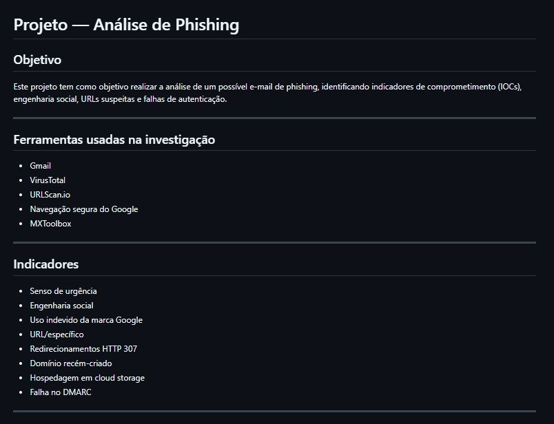
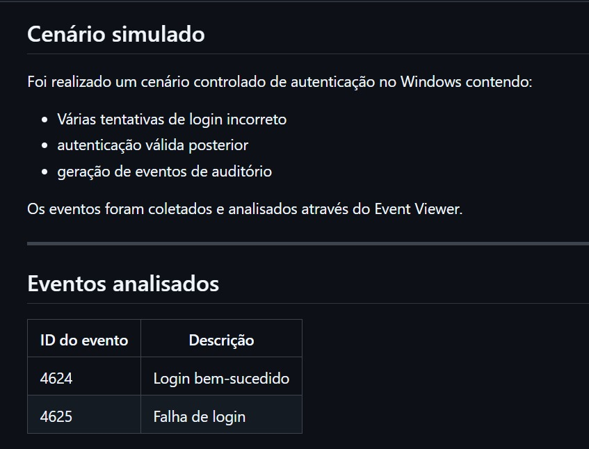

Fortaleza - CE | Casada | CNH A/B
Contato: (85) 9 xxxx-xxxx
E-mail: annieauriema@gmail.com
LinkedIn: linkedin.com/in/annie-auriema
GitHub: github.com/AnnieAuriema
Atuar na área de Cibersegurança, Segurança da Informação ou SOC, aplicando conhecimentos em suporte técnico, análise de incidentes, monitoramento e práticas de segurança defensiva, contribuindo para a proteção de ambientes corporativos.
Profissional com experiência em suporte técnico, atendimento ao usuário e resolução de incidentes, formada em Análise e Desenvolvimento de Sistemas e atualmente cursando Tecnologia em Cibersegurança. Possui conhecimentos em Segurança da Informação, Windows, Microsoft 365, redes, ITIL, LGPD e monitoramento, além de desenvolver projetos práticos em análise de phishing e ambientes SOC/Blue Team. Perfil analítico, comunicativo e orientado à aprendizagem contínua, buscando oportunidade em Cibersegurança, SOC ou Segurança da Informação.

Investigação de e-mail suspeito utilizando:

Análise de eventos Windows utilizando:
Analista de Suporte / Help Desk N1
01/2026 – 04/2026
Atuação em suporte técnico N1, atendimento ao usuário, registro e resolução de chamados, suporte Windows e apoio à investigação inicial de incidentes.
Supervisora de Operações
08/2023 – 09/2025
Gestão de equipe, acompanhamento operacional, atendimento ao cliente e organização de processos.
Promotora de Vendas
06/2022 – 08/2023
Atendimento ao cliente, organização operacional e suporte às atividades comerciais.